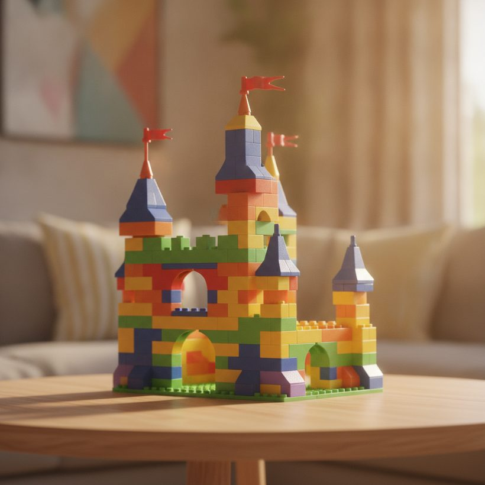
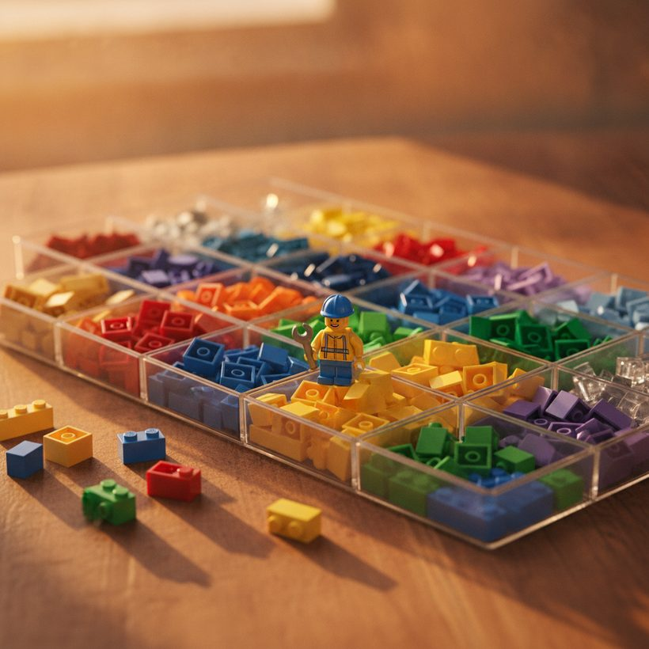

Come valutare un set LEGO senza scatola né istruzioni
Manca la scatola o le istruzioni? Ecco come stimare un valore usato equo per il tuo set LEGO e decidere se venderlo intero o smontarlo per pezzi.
Classifica · 2026Un set LEGO senza scatola né istruzioni vale comunque denaro, ma raramente il prezzo pieno di listino. Chi compra LEGO usati paga per la completezza, la condizione e la certezza che ogni pezzo sia presente, e ogni elemento mancante erode tutto questo. La buona notizia è che un set senza imballaggio può comunque spuntare un buon prezzo se i mattoncini e le minifigure ci sono tutti. La sfida è arrivare a un numero realistico invece di andare a intuito.
Questa guida spiega come imballaggio, documentazione e minifigure mancanti influiscono sul prezzo, come cercare quanto si sono effettivamente venduti set simili, come pulire e preparare un set per la vendita, e quando ha più senso vendere i pezzi singolarmente invece del set intero.
Perché scatola e istruzioni contano meno di quanto pensi
I collezionisti spesso sopravvalutano quanto una scatola aggiunga al valore. Per la maggior parte dei set ritirati, la scatola originale è un premio modesto, non un fattore decisivo. Le istruzioni contano un po' di più per le costruzioni grandi, ma sono ampiamente disponibili come PDF gratuiti scaricabili dal sito di LEGO stesso, il che attenua la perdita. Ciò che interessa di più agli acquirenti è che il set sia completo e pronto da montare.
Come gerarchia approssimativa, un set sigillato in scatola perfetta spunta il massimo, seguito da un set usato ma completo con scatola e istruzioni, poi un set completo senza scatola, e infine un set incompleto. Il divario tra "usato completo con scatola" e "usato completo, senza scatola" è di solito minore del divario tra "completo" e "con pezzi mancanti". Ci sono eccezioni: per i set da collezione di fascia grail, come le grandi costruzioni su licenza o i temi vintage, una scatola intatta può aggiungere un premio significativo perché quegli acquirenti collezionano l'intero pacchetto, non solo il modello. Per il set ritirato medio che si vende ai costruttori, la scatola è un di più gradito piuttosto che il motore principale.
Non sai quanto vale il tuo set? Confronta i migliori strumenti gratis →Come ogni elemento mancante taglia il valore
Aiuta pensare a un set usato come a una pila di livelli di valore separati, ciascuno dei quali può essere sottratto. La mancanza della scatola di solito toglie una percentuale che va da una cifra bassa a una doppia cifra bassa su un prezzo usato-completo, maggiore per i set di grado da collezione e minore per quelli comuni. La mancanza delle istruzioni cartacee costa ancora meno, spesso solo qualche punto percentuale, perché i PDF gratuiti le sostituiscono; l'eccezione sono i rari set d'epoca le cui istruzioni non sono mai state digitalizzate. La mancanza degli adesivi, o averli applicati male, è un silenzioso killer di valore che molti venditori ignorano, dato che adesivi non usati o posizionati correttamente segnalano un proprietario attento.
Il calo più netto arriva dalla mancanza di mattoncini e soprattutto minifigure. Un set pubblicizzato come "completo" perde all'istante la fiducia dell'acquirente se manca anche solo un paio di piccoli elementi, e le figure su licenza possono cancellare da sole una grossa fetta del valore. Anche pezzi danneggiati o scoloriti, come i mattoncini bianchi ingialliti o i pezzi rosicchiati, abbassano il prezzo perché sono difficili da sostituire in modo pulito. Quando costruisci la tua stima, sottrai questi livelli uno alla volta da una base usato-completo invece di scegliere un unico sconto vago.
Vedi la classifica →
Come le minifigure mancanti cambiano i conti
È nelle minifigure che si concentra il valore. Una singola minifigure ricercata può valere più del resto del set messo insieme, soprattutto nei temi su licenza come Star Wars, Harry Potter o Marvel. Se al tuo set manca anche una sola figura chiave, aspettati che il prezzo cali bruscamente, perché gli acquirenti dovranno procurarsi quella figura separatamente a caro prezzo.
Prima di valutare l'intero set, identifica ogni minifigure e controlla se qualcuna è rara o esclusiva. Un set completo tranne che per i mattoncini ma con tutte le figure spesso si vende meglio del caso opposto. Quando ricerchi vendite comparabili, conferma sempre se quelle inserzioni includevano l'intero elenco di figure.
Attenzione a una trappola comune: minifigure di riproduzione o aftermarket che sembrano ufficiali ma non lo sono. Chi compra figure di valore ispeziona le stampe di gambe e busto, la stampa delle braccia e i minuscoli segni di stampo sotto i piedi, e un falso non dichiarato affosserà sia il prezzo sia la tua reputazione di venditore. Se non sei certo che una figura sia autentica, descrivila come non verificata invece che autentica. Quando il valore di un set dipende quasi interamente da una o due figure, spesso è più intelligente mettere in vendita quelle figure da sole e vendere i mattoncini rimanenti come lotto sfuso, catturando il premio delle figure invece di seppellirlo dentro il prezzo del set intero.
Usato-completo vs. incompleto: fissare una base
Inizia classificando onestamente il tuo set. Usato-completo significa che ogni mattoncino e figura è presente, pulito e strutturalmente integro, anche senza imballaggio. Incompleto significa che manca uno o più elementi. Queste due categorie si collocano in fasce di prezzo molto diverse, quindi sii onesto prima di pubblicare. Se non sei sicuro in quale fascia rientri il tuo set, una rapida occhiata a come i principali strumenti di valutazione ../index-it.html?utm_source=blog&utm_medium=article&utm_campaign=value-lego-set-without-box suddividono la condizione può ancorare il tuo grado prima di impegnarti su un numero.
Per trovare una base, cerca i prezzi realmente venduti invece di quelli richiesti. I prezzi richiesti riflettono la speranza; quelli venduti riflettono il mercato. La nostra scelta migliore per dati verificati sui venduti è BrickGains, che aggrega i prezzi reali delle vendite concluse tra i marketplace, così lavori a partire da quanto gli acquirenti hanno effettivamente pagato. Puoi iniziare con gli strumenti che confrontiamo ../index-it.html?utm_source=blog&utm_medium=article&utm_campaign=value-lego-set-without-box per vedere come tendono i valori usato-completo per il tuo set specifico.
Vedi la classificaScopri quanto valgono davvero i tuoi set — confronta i top 6, gratis.Vedi la classifica →Capire il valore di smontaggio (part-out)
Il "valore di smontaggio" (part-out value) è il totale che potresti ricavare vendendo separatamente i singoli mattoncini e le minifigure di un set invece che come lotto unico. Poiché i pezzi sfusi servono a chi ripara o personalizza altri set, la somma dei pezzi può superare il prezzo del set intero, in particolare per i set più vecchi ricchi di elementi utili o rari.
Il modo standard per stimare il valore di smontaggio è tramite BrickLink, il più grande marketplace per i singoli pezzi LEGO. BrickLink può totalizzare il valore di mercato attuale di ogni elemento di un dato numero di set, dandoti un limite superiore su quanto potrebbe rendere lo smontaggio. Considera quella cifra un tetto, non una garanzia, poiché vendere i pezzi richiede tempo, impegno nelle inserzioni e molte piccole spedizioni prima di realizzare l'intero importo.
Due numeri di BrickLink contano e la gente li confonde. Il prezzo medio venduto riflette a quanto i pezzi si sono effettivamente mossi negli ultimi mesi, mentre la media delle inserzioni attuali riflette quanto i venditori chiedono oggi. Affidati alle cifre dei venduti, e applica uno sconto per la realtà che non tutti i pezzi si vendono: mattoncini piccoli e comuni possono restare invenduti a lungo, quindi il rendimento pratico dello smontaggio è di solito ben sotto il totale teorico. Considera anche le commissioni per ordine e le spedizioni. Uno smontaggio batte una vendita del set intero solo quando il totale scontato e al netto delle commissioni supera il prezzo usato-completo con margine sufficiente a giustificare le ore extra di inserzione e imballaggio.
Vedi la classifica →
Come cercare i prezzi reali dell'usato venduto
Una valutazione affidabile si riduce a buoni riferimenti comparabili. Cerca per numero esatto del set, filtra sulle inserzioni vendute o concluse e annota la condizione descritta. Alcune abitudini migliorano l'accuratezza:
- Abbina la condizione: confronta il tuo set senza scatola solo con altre inserzioni senza scatola e complete.
- Ignora i valori anomali: una vendita insolitamente alta non fa il mercato; guarda l'insieme.
- Controlla la data: i valori LEGO cambiano nel tempo, quindi le vendite recenti contano di più.
- Conferma la completezza: leggi le descrizioni per verificare che tutte le figure e i pezzi fossero inclusi.
Incrociare un paio di fonti ti dà una fascia difendibile. Se vuoi una lettura più rapida di tendenze e medie, guarda come gli strumenti di valutazione ../index-it.html?utm_source=blog&utm_medium=article&utm_campaign=value-lego-set-without-box gestiscono i dati sui prezzi venduti invece di raschiare manualmente ogni marketplace da solo.
Pulire e preparare un set sfuso prima di venderlo
La presentazione muove il prezzo, e un set senza scatola deve vendersi sulla sola condizione dei mattoncini. Inizia lavando gli elementi rimovibili in acqua tiepida con un po' di detersivo per piatti delicato, evitando l'acqua bollente che può deformare o opacizzare la plastica. Salta i pezzi stampati, quelli con adesivi, l'elettronica e i pannelli grandi nell'acqua; puliscili invece a mano. Lascia asciugare tutto completamente all'aria prima di rimontare, perché l'umidità intrappolata porta a un velo e, col tempo, a un odore di muffa che gli acquirenti notano.
Una volta pulito, decidi se vendere il set montato o smontato in bustine. Montato si vende più in fretta e fotografa meglio, ma si spedisce con rischio e costo più alti per le costruzioni grandi; suddiviso in bustine per fase protegge i modelli fragili e rassicura gli acquirenti che i pezzi sono ordinati. In entrambi i casi, scatta foto chiare e ben illuminate del set reale, includi uno scatto di tutte le minifigure insieme e dichiara onestamente che scatola e istruzioni sono assenti, linkando il PDF gratuito. Foto accurate e generose riducono resi e contestazioni, il che protegge il prezzo che alla fine ottieni.
Quando vendere come set vs. smontarlo per pezzi
Vendi il set intero quando è completo, il valore assemblato è vicino o superiore al totale di smontaggio, e vuoi una vendita rapida e senza sforzo. Un set completo senza scatola con tutte le minifigure è di solito il più facile da piazzare come lotto unico.
Valuta lo smontaggio quando il set è incompleto, quando la stima di smontaggio supera in modo significativo il prezzo del set intero, o quando il set contiene minifigure di spicco che si vendono meglio da sole. I set incompleti in particolare spesso rendono di più a pezzi, poiché non sei più penalizzato per l'elemento mancante. Soppesa lo sforzo extra e la seccatura delle spedizioni rispetto al potenziale rendimento più alto prima di impegnarti, e se sei incerto, prezza entrambe le strade usando gli strumenti di confronto ../index-it.html?utm_source=blog&utm_medium=article&utm_campaign=value-lego-set-without-box e lascia decidere i numeri.
Vedi la classifica 2026 dei migliori strumenti di valore LEGO
Scopri quanto valgono davvero i tuoi set — confronta i top 6, gratis.
Vedi la classificaDomande frequenti
Un set LEGO vale molto meno senza la scatola?
Di solito solo un po' meno. Per la maggior parte dei set ritirati la scatola è un premio modesto, non un fattore importante. Un set usato-completo senza scatola si vende comunque bene, purché ogni mattoncino e minifigure sia presente e la costruzione sia pulita.
Dove posso trovare le istruzioni se le mie mancano?
LEGO offre PDF gratuiti delle istruzioni di montaggio per la stragrande maggioranza dei set sul suo sito ufficiale, ricercabili per numero di set. Poiché la documentazione è facile da sostituire, le istruzioni mancanti hanno un effetto limitato sul valore rispetto a pezzi o figure mancanti.
Cos'è il valore di smontaggio e perché conta?
Il valore di smontaggio è quanto potresti ricavare vendendo i mattoncini e le minifigure di un set singolarmente invece che come lotto unico. Per i set più vecchi o ricchi di figure i pezzi possono totalizzare più dell'intero, ecco perché la stima di smontaggio di BrickLink vale la pena di essere controllata prima di vendere.
Come scopro a quanto si è effettivamente venduto il mio set LEGO usato?
Cerca per numero esatto del set e filtra sulle inserzioni vendute o concluse, abbinando la condizione del tuo set. Aggregatori verificati di prezzi venduti come BrickGains velocizzano il tutto estraendo dati reali sulle vendite concluse, così valuti da quanto hanno pagato gli acquirenti, non dai prezzi richiesti.
Dovrei pulire e rimontare un set sfuso prima di venderlo?
Sì, con criterio. Lavare delicatamente i mattoncini rimovibili in acqua tiepida e leggermente saponata e asciugarli completamente migliora la presentazione, ma tieni fuori dall'acqua i pezzi stampati, con adesivi ed elettronici. Vendere il set montato o ben suddiviso in bustine, con foto chiare di tutte le minifigure, costruisce la fiducia dell'acquirente e riduce i resi.